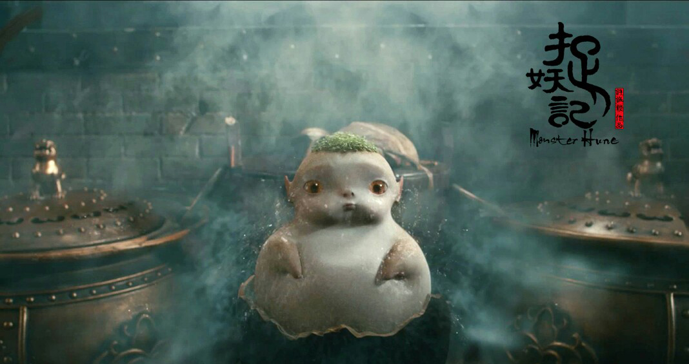

CG特效之流体特效
流体，在我们生活中无数不在，因为最显著的特性是其带有大量的动能，运动速度快导致极少能捕捉到合适的镜头素材，这就需要CG软件来制作。但主流的三维建模软件中，多是单独的流体特效插件，在流体制作板块都比较薄弱。所以要实现模拟流体的变化需要一个真正还原出流体动力学的软件。
随着CG动画技术的发展，越来越多的想象力被电脑制作出来，只要想得出来，相同的特效就可以在影片中显现出来。在众多特效中，元素特效是最难展现的，因其运动的不规律和不稳定性，想要还原特效是非常困难的，但这也是最不可能捕捉的实拍素材。
流体特效
RealFlow是由西班牙Next Limit公司出品的流体动力学模拟软件。它是一款独立的模拟软件，可以计算真实世界中运动物体的运动，包括液体。与传统认知不同，RealFlow不是一个插件。但RealFlow没有提供任何照明和渲染功能。
CG流体特效&MAYA流体特效
RealFlow专用于水面波浪的模拟，如海面、落入物体后水面泛起的涟漪、行驶在水中的船(包括破浪泛起的粒子水花和产生的水面拖尾)，能够完成的项目包括：物体落入水面后激起波浪，并且随水面上下波动，还能产生溅起的水花。在水面上快速运动的物体产生尾迹、水花和波浪，常用于船只的航行模拟。表现动态、自然波动的水面，如湖泊、水池、海洋等，还能产生海水拍岸溅起海浪水花的效果。
在maya中流体是模拟单一的真是物理流体效果的技术，比如多种多样的大气，烟火，空间的二维和三维填充，以及粘性流体等效果。流体通过特定的材质还可以实现开放的还痒特效，并可以和漂浮在其中的物体产生互动等.